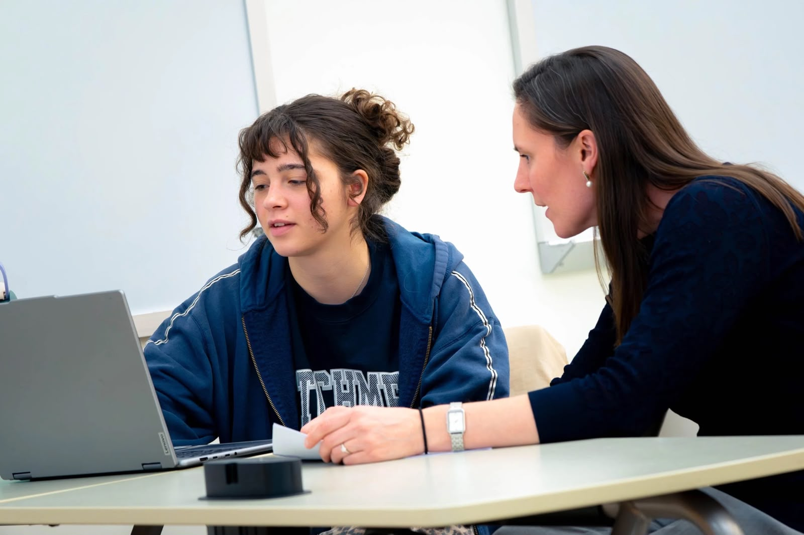
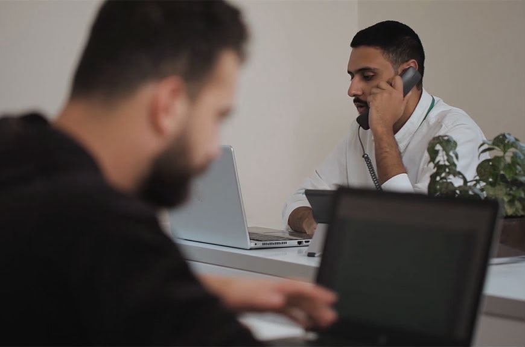

Sanadi works to strengthen mental health and wellbeing by raising awareness, supporting access to care, empowering individuals and families, and contributing to healthier and more supportive communities across Lebanon.
Sanadi works to promote mental health and wellbeing by supporting individuals, families, and communities through awareness, guidance, and accessible mental health initiatives.
Our work aims to reduce stigma surrounding mental health, encourage early support-seeking, and contribute to a community where people feel heard, respected, and supported.
Through our programs and activities, Sanadi works toward strengthening mental health support by:


Through mental health awareness, support, community engagement and outreach.
Sanadi brings together individuals committed to promoting mental health, wellbeing, awareness, and community support across Lebanon.
Our team works to create supportive environments, strengthen access to reliable information, and encourage people to seek the care and guidance they need with dignity and respect.
Through collaboration, outreach, and community engagement, Sanadi works alongside professionals, volunteers, partners, and stakeholders who share a commitment to better mental health and wellbeing.
Together, we aim to strengthen support systems and contribute to healthier, more inclusive communities.
Sanadi is supported by a dedicated team of volunteers committed to mental health, wellbeing, community support, and positive social impact.
Our volunteers contribute through awareness activities, outreach, community engagement, events, educational initiatives, and support programs that strengthen Sanadi’s mission.
Volunteers are expected to demonstrate empathy, responsibility, confidentiality, and a strong commitment to supporting individuals and communities with dignity and respect.
Are you interested in mental health and improving the wellbeing of others? If you are ready to commit your time, energy, and skills to supporting Sanadi’s mission, we welcome you to apply and become part of our volunteer team.